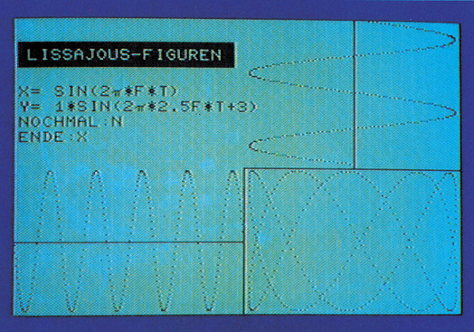
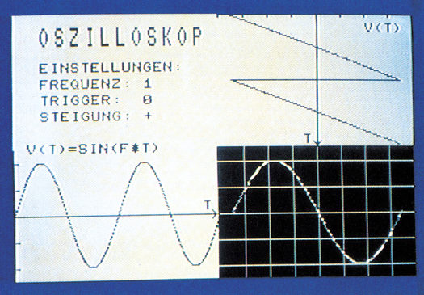

Der Computer im Physikunterricht
Wenn vor 10 Jahren jemand behauptet hätte, daß heute, im Jahr 1986, Computer für schulische Zwecke eingesetzt werden, hätte man darüber gelächelt. Die Mikroelektronik hat sich aber in den letzten Jahren so rasant entwickelt, daß Computer heute genauso in den Unterricht gehören wie Deutsch oder Mathematik. Wir zeigen Ihnen hier, was sich mit Computern im Unterricht anstellen läßt.
In den letzten Jahren haben sich Computer in fast allen Bereichen der Naturwissenschaften durchgesetzt. So kommen auch Schulen nicht umhin, sich mit diesem Thema auseinanderzusetzen. Was sich nun mit dem Computer am Beispiel Physikunterricht alles anstellen läßt, wollen wir uns hier etwas genauer anschauen.
Das Computer-System ist an sich, wenn man es genauer betrachtet, nur ein Grundsystem, das aus der Zentraleinheit (Computer mit Tastatur), Monitor oder Fernsehgerät, zumindest einer Datasette oder Diskettenlaufwerk zur Datenspeicherung und eventuell einem Drucker besteht. Aber schon mit diesem Grundsystem läßt sich im Physikunterricht eine Menge anfangen. Nehmen wir zum Beispiel an, Sie haben in einem Versuch, im Rahmen einer Meßreihe, Werte zusammengestellt und wollen diese Werte anhand einer linearen Regression grafisch auswerten. Jeder, der das schon einmal zu »Fuß«, also mit Hilfe eines Taschenrechners probiert hat, kennt die Arbeit, die dahinter steckt. Mit einem Computer ist das anders. Ist die lineare Regression und das entsprechende Unterprogramm zur grafischen Darstellung beliebiger Kurven einmal programmiert, müssen nur noch die Ergebnisse der Meßreihe eingegeben werden. Innerhalb von Sekunden ist dann die Grafik fertig. Dadurch wird die Zeit, die einer Lehrkraft zur Durchführung eines Versuchs zur Verfügung steht, verkürzt. Mit anderen Worten: In den ohnehin recht kurzen Unterrichtsstunden läßt sich mit Hilfe eines Computers effizienter arbeiten. Die gewonnene Zeit kann zum Beispiel dazu dienen, das erlernte Wissen zu vertiefen. Natürlich sollte folgendes beachtet werden: Je intensiver Computer eingesetzt werden, um stupide Rechenarbeit zu erledigen, desto schwerer fällt es den Schülern, Arbeiten dieser Art im Kopf oder mit Hilfe des Taschenrechners auszuführen. Daher ist unbedingt darauf zu achten, daß bestimmte Rechenvorschriften von den Schülern beherrscht werden, bevor der Computer eingesetzt wird.
Computer lassen sich aber nicht nur dazu verwenden, physikalische Messungen auszuwerten. Viel interessanter ist es, die Computer selbst messen zu lassen. Dazu existieren beim C 64 zwei Schnittstellen, von denen sich eine, der User-Port, frei programmieren läßt. Durch ihn stehen dem Anwender acht Leitungen zur Datenein/-ausgabe zur Verfügung. Jede dieser Datenleitungen läßt sich über ein Steuerregister als Ausgabe- oder Eingabeleitung programmieren.
Dies soll ein Beispiel veranschaulichen, das in jedem Physikunterricht vorkommt, nämlich die Bestimmung der Erdbeschleunigung.
Die Ausgangsgleichung ist »s = 1/2 a t2«. Aufgelöst nach »a« für Beschleunigung, wird aus der Gleichung »a = 2s/t2«. Die unbekannten Größen sind »s« (für Strecke oder Weg) und »t« (für die Zeit). So viel zu den physikalischen Gleichungen. Der Versuchsaufbau ist denkbar einfach: Man nehme eine Stahlkugel und lasse sie fallen, und zwar durch zwei Lichtschranken, die übereinander angeordnet sind. Die Strecke »s« entspricht nun dem Abstand der beiden Lichtschranken. Was jetzt noch gemessen werden muß, ist die Zeit, die die Stahlkugel benötigt, um den Weg zwischen den Lichtschranken zurückzulegen. Genau das übernimmt der Computer. Die beiden Lichtschranken werden über ein geeignetes Interface an den User-Port angeschlossen. Passiert die Stahlkugel die erste Lichtschranke, muß ein Zähler im C 64 gestartet werden, der dann so lange zählt, bis die Stahlkugel an der zweiten Lichtschranke einen Impuls auslöst. Der entsprechende Zählerstand entspricht der gesuchten Zeit und muß nur noch in Sekunden umgerechnet werden. Eine solche Zeitmessung wäre natürlich genauso gut mit einem Speicheroszilloskop möglich. Jedoch sind Geräte dieser Art extrem teuer und schwer zu bedienen, so daß sie für Versuche, die die Schüler selbst durchführen, ungeeignet sind. Computer sind zwar auch teuer, jedoch haben sie einen Vorteil. Man kann sie so programmieren, daß von den Schülern keine Fehler gemacht werden können.
Mit Hilfe einer kleinen Hardware-Erweiterung, die an den User-Port angeschlossen wird, läßt sich der C 64 zu einem vollwertigen Speicheroszilloskop umfunktionieren. Er hat sogar gegenüber herkömmlichen Geräten einige Vorteile.
Der Computer als Speicheroszilloskop
Aber auch die Nachteile sollen nicht verschwiegen werden.
Vorteile: Die Größe des Bildschirms ist nicht auf 10 mal 10 cm begrenzt, wie das bei »normalen« Speicheroszilloskopen der Fall ist, sondern hängt einzig und allein von der Größe des angeschlossenen Monitors ab. Verwendet man ein Fernsehgerät, kann jeder Schüler Messungen von seinem Platz aus verfolgen.
Die Meßergebnisse lassen sich auf Diskette beziehungsweise Kassette speichern und sind somit jederzeit verfügbar. Aber ein noch entscheidender Vorteil ist der Preis. Gute, herkömmliche Speicheroszilloskope sind nicht unter 2000 Mark zu haben. Der Hardwarezusatz und das entsprechende Softwarepaket, das den C 64 zum Speicheroszilloskop umfunktioniert, kostet unter 300 Mark.
Nachteile: Ein normales Speicheroszilloskop ist schnell. Das heißt es lassen sich Frequenzen im Megahertz-Bereich messen beziehungsweise speichern. Da der schon erwähnte Hardwarezusatz für den Computer jedoch einen Analog-/Digital-Wandler enthalten muß, ist die zu messende Frequenz auf einige Kilohertz begrenzt. Ein weiterer Nachteil ist die Tatsache, daß es sich bei den eingebauten A-D-Wandlern um 8-Bit-Wandler handelt. Mit ihnen lassen sich Amplituden nur in 1/256stel-Schritten messen. Da der C 64 aber eine vertikale Auflösung von maximal 200 Punkten hat, dürfte sich dieser Nachteil kaum bemerkbar machen.
Ein Beispiel soll den Einsatz des C 64 als Speicheroszilloskop demonstrieren.
Bei dem Beispiel handelt es sich um ein Thema aus der Schwingungslehre. Es sollen zwei unterschiedliche Schwingungen miteinander verglichen werden, und zwar in bezug auf Frequenz und Phase. Ganz hervorragend eignen sich dazu die Lissajousen-Figuren (Bild 1). Dabei wird der Elektronenstrahl von einer Schwingung in die y- und von der anderen in die x-Richtung abgelenkt. Ist die Frequenz und die Phase beider Schwingungen identisch, so wird das durch einen Kreis auf dem Monitor angezeigt.

Die Lissajousen-Figuren eignen sich außerdem noch dazu, das Funktionsprinzip eines Oszilloskops zu erklären. Wird der Elektronenstrahl nur in x-Richtung abgelenkt, und zwar mit Hilfe eines sägezahnförmigen Signals, so wandert der Leuchtpunkt auf dem Monitor beziehungsweise Fernsehgerät in Abhängigkeit von der Frequenz des Signals entsprechend schnell von links nach rechts über den Bildschirm. Legt man nun an den y-Eingang ebenfalls ein Signal an, so erhält man das typische Bild eines Oszilloskops (Bild 2).

Natürlich läßt sich der C 64 als Speicheroszilloskop auch für andere Messungen einsetzen. Dies soll ein Beispiel zeigen, bei dem der im C 64 integrierte A-D-Wandler dazu benutzt wird, die Auf- und Entladekurven eines Kondensators zu demonstrieren. Dazu wird der Kondensator über ein Widerstandsnetzwerk mit der Versorgungsspannung (5 Volt), Masse und dem analogen Eingang des Computers verbunden. Zwei Widerstände sorgen nun über einen Schalter dafür, daß sich abhängig von der Schalterstellung der Kondensator auf- beziehungsweise entladen läßt. Werden die beiden Widerstände und der Kondensator entsprechend groß gewählt, ist der Auf- beziehungsweise Entladevorgang so langsam, daß er auf dem Monitor gut verfolgt werden kann.
Alle bisher aufgeführten Beispiele sollten nur andeuten, was mit einem Computer im Physikunterricht alles möglich ist. Das Anwendungsspektrum ist damit aber noch lange nicht erschöpft. Vielmehr existieren zur Zeit schon Hard- und Software-Erweiterungen, mit denen sich speziell der C 64 in allen Bereichen der Physik, Chemie und Elektronik sowie Optik und Wärmetechnik als »Meßdiener« bewährt hat. Der C 64 kann aber nicht nur messen. Genauso gut eignet er sich auch zum »Steuern« und »Regeln« beliebiger Maschinen und Meßeinrichtungen aus den oben genannten Bereichen. So lassen sich zum Beispiel Temperaturen absolut konstant halten oder Gasdrücke messen und regeln. Ein weiteres interessantes Thema im Bereich »Messen«, »Steuern«, »Regeln« ist der Einsatz des Computers zur Robotersteuerung. Von den Möglichkeiten, die daraus resultieren, wird zur Zeit an den Schulen so gut wie kein Gebrauch gemacht. Das wird sich wohl ändern müssen, denn Roboter werden heute in vielen praxisbezogenen Berufssparten eingesetzt, zum Beispiel bei der Auto- oder Stahlindustrie. Aber auch in der chemischen Industrie setzen sich Roboter für Arbeiten, die gesundheitsschädigend sind, durch. In naher Zukunft wird sich ihr Einsatzgebiet noch vergrößern, so daß sich Schulen mit diesem Thema genauso beschäftigen müssen, wie das heute beim Ottomotor oder Diesel-Kreis-Prozeß der Fall ist.
Allen Physiklehrern, die das Thema »Computer« in ihren Unterricht mit einbeziehen wollen, ist das Buch »Computerpraxis bei naturwissenschaftlichen Experimenten« zu empfehlen. Es ist nicht nur für diejenigen gedacht, die den Umgang mit Computern beherrschen, auch jene kommen damit zurecht, die bisher noch nie etwas mit Geräten dieser Art zu tun hatten. Das Buch beginnt mit dem Aufbau und der Funktionsweise eines Mikrocomputersystems, erklärt A-D-Wandler und beschreibt Programme und Selbstbaugeräte für den Unterricht bis hin zum Speicheroszilloskop. Auch biologische, medizinische und chemische Bereiche kommen nicht zu kurz, ja selbst die Herstellung von Platinen wird ausreichend genau erklärt.
Die einzige Anforderung, die an den Lehrer gestellt wird, ist der Wunsch sich mit der »neuen« Technologie Computer auseinanderzusetzen. Ist Interesse von Seiten der Lehrerschaft vorhanden, kann der Computer dabei helfen, auch das Interesse der Schüler zu wecken. Denn das Arbeiten mit dem Computer macht Spaß und fördert dadurch die Aufmerksamkeit und die Mitarbeit eines jeden Schülers.
(ah)- Bezugsquelle: Dr. H. Krönke KG, Postfach 730046, 3000 Hannover
- Literatur: Praxis der Naturwissenschaften 34, Heft 1 (Jan.85)
- G H. Göritz und H. J. Scheefer, MNU 38 (1985) 80 bis 87
- R. Linke, MNU 38(1985) 281 bis 287, Gesamtkonzept für die informationstechnische Bildung in der Schule, Schriften des Bayrischen Staatsministeriums, Reihe B, Heft 5 Prof. Dr. R. Lincke (Institut für Experimentalphysik Universität Kiel) Physikalische Experimente mit Mikrocomputern
- »Computerpraxis bei naturwissenschaftlichen Experimenten«, Akademie für Lehrerfortbildung, Kardinal-von-Waldburg-Straße 6,8880 Dillingen, 240 Seiten, 17 Mark